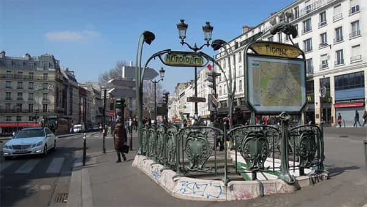
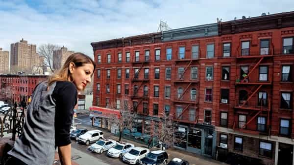
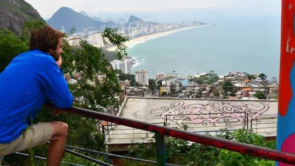
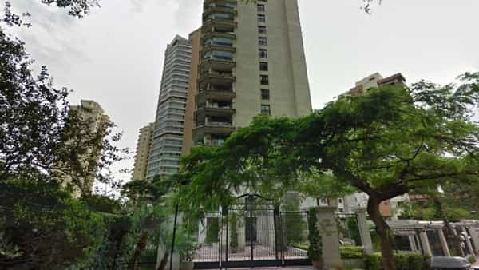

André is a young European who left his decaying country in 2012 for greener pastures. He enjoys exploring subterranean places, reading about a host of interconnected topics, and yearns for Tradition.


Since at least the 1960s, more and more people of European descent have been fleeing the unwanted, invasive and often crime-riddled presence of non-whites. At the end of the 1980s, my parents left the Parisian suburb of Créteil after Arab drug dealers had taken over the neighborhood and sent their sons en masse to the local public school.
In the US, suburbanization has been an answer to mandatory busing and anti-“discrimination” policies. As blacks were pushed in or allowed to invade peaceful places, whites abandoned these en masse as well. Now the suburbs, in addition to being isolating and expensive, are targeted as well by unruly non-whites and the anti-white media that defends them.
Most cases of migration today are non-whites invading places whites have built and whites fleeing them. Yet there are some exceptions to this depressing trend. These exceptions are at best moderately inspiring: as we will see, they have been caused by the kind of hypocrite liberals who loathe us, too. But even then, they show that white dispossession is not a fatality and that, with a bit of will and political-bureaucratic power, positive urban policies can be pursued.

For ages, the “City of Lights” had blue- as well as white-collar populations. Parisians ranged from bums to billionaires. Then, from the 1970s onwards, the factories were sent in other countries, automatized or simply shut down, thus reducing the former workers to pauperized welfare recipients.
Middle-classers did not care much until they noticed the growing price of everything, rents and daily shopping, coupled with a shortage of employments. Slowly, but surely, Paris became too expensive for them—and when they considered going to close suburbs, they noticed these had been made inhabitable by alien African populations.
Thus many former Parisians are forced to live either in a very far-away periphery, beyond the non-white masses that occupy the immediate surroundings of the city, or more or less among them and forced to do their best to ignore their offences.
So far it could be thought of as another case of white flight. But there is more. The first cause of exodus here has not been non-whites, as in other cases, but the typical “gentrification” phenomena where a left-leaning, globalist and wealthy upper middle class appropriates a neighbourhood. Several previously “popular” districts had their flats bought off by marketers, executives, mainstream journalists, “non-profit” white collars and other sons of the so-called information age. This rather peculiar class attracted organic retailers, “trendy” hipster places, and drove the rents and life prices up, thus forcing the less wealthy out.
Look at the Pigalle area. Fifteen years ago, it was Paris’ first red light district. There were plenty of nightlife, sex-shops and street hookers going along with bars and clubs. Drug trafficking and casual violence were part of the district. Nights were noisy and streets become dirty on Saturday and Sunday mornings. Because of all this, flats there were available at a cheap price. More and more of them were bought by upper middle class nationals and wealthy foreigners. These attracted Naturalia retailers, lounge bars, driving the square meter price up. More shops were bought off and turned away from wild nights and prostitution.
Minister of Interior Nicolas Sarkozy, although despised by the champagne left and constantly criticized by mainstream media, did their bidding by repressing street prostitution—thus contributing to making Pigalle more bourgeois, more “artsy”, more trendy-but-not-too-raunchy, more like all other hipster areas.
Before the gentrification, many Arab pimps and other related crooks swarmed there. Now, it may be said that Pigalle lost its soul, but these criminals are gone. What worked against the working class can also work against chronic parasites and offenders.
In passing, note that highly lib-fashionable events such as the Gay Pride and Paris Plage motivated the expelling of bums from the banks of Seine. The Right would have been “fascist” had it done that. When the left did, it did so with the moral backing of “non-profit” organisms and without media scandal.

The Big Apple has long been famous for its low-white, high-crime neighbourhoods. Those who do not live into the Bronx have mythologized it as a cradle of the “vibrant” hip-hop culture—and many who live elsewhere also managed to extract juicy crime or violence stories from it. The same can be said about other famous areas such as Harlem and Time Square.
Indeed, during the 1960s, these districts went down into a spiral of crime—and uncontrolled immigration. Yet, later, things have changed. During the 1990s, Republican mayor Rudy Giuliani enforced a tough policy against crime: massive police forces were deployed, “zero tolerance” meant a highly efficient determent even for minor offences, and the same murder rate that had quadrupled during the 1960-70s has been divided by three.
From 2002 to 2013, Republican mayor Michael Bloomberg pursued the same policy. He is known as a “staunch proponent” of Stop-And-Frisk, something liberals used to mount a huge attack over Trump but seem to have curiously tolerated when it benefited to New York.
Now that two Republicans did everything they could to secure a nice environment for their champagne liberal citizens, it happens that the former black ghetto South Bronx is being colonized by white—and (((white)))—hipsters. Some clever developers, such as Keith (((Rubenstein))), and local actors such as Ted (((Weinstein))), happen to be related with the growth of coffee shops and trendy organic retailers.
After all, a neighbourhood that has been “cleaned” by friendly senior officials and where space is still cheap happens to be a good place to take over.

Brazil is famous for its endemic crime and wide favela problem. Rio de Janeiro, the old imperial capital and most famous city of the country, had its favelas immortalized in movies such as Cidade de Deus (2002) and Tropa de Elite (2007). Stuck between the Atlantic Ocean and mountains, Rio is a place where space is scarce. Favelas grew illegally on mountainsides and have a long track record of violence, poverty, and numerous children from bad boys and teen mothers.
Yet Rio had still something more. It was a “cool” city. The favelas were barely livable for foreigners, but their movie exposure made them “cool” too. Then, it just happened that the militarized police corps commissioned with the favelas cracked down on them, killed most gang leaders, and would only let live the faveleiros who would dabble in drugs but not in weapons. When the tropa de elite completed its tough job, a proximity police corps was installed to endure that the favela would remain calm.
Guess what happened next? Once pacified, these places were still a bit messy, but they benefited from a privileged localization and low prices. Gringos, followed by some cariocas, started to rent places in favelas. Yes—even favelas can witness this same phenomena. Then…
Seen as unexpansive to foreigners, prices now frighten old dwellers. According to the president of the Association of Residents of Vila Vidigal, Marcelo da Silva, the arrival of ‘gringos’ and the [sociological] reshaping of the favela were accompanied by a substantial increase of life costs, which make access more difficult to lower classes.
“To those who come from the outside, paying R$800 or R$1.000 [approximately $250-300] of rent is an excellent deal. But to those who are from here this is expansive. Now, who could before rent a house for all his family needs to remain in a kitchenette or leave the place”, Silva said.
Also, the same upper middle-class leftists whom you can see in Tropa de elite gloating about Foucault, “repression”, “alienation” and “social work” and despising the “fascist” police joined the wave of foreigners who appropriated the pacified favela.

In contrast with Rio, São Paulo is a wide city with a lot of space left. Opportunities to grow are far from scarce, and favelas and small homes can still be found there abundantly.
Still, the phenomena we are concerned with happened here at least once. During the 1970s, the powerful (((Klabin))) family managed to get a particular district “benefit” from a policy of “un-favelization”, which actually means that a then-tolerated favela was no more so and had its inhabitants expelled by the police.
The Klabin and (((associates))) then bought and sold the plots. Today, the area is officially referred to as Chácara Klabin and ranks among the most expensive in São Paulo, although its public parts are windy and inhospitable. (The private condominiums are much better.) Most of its inhabitants are of (((Lithuanian))) origin, and the French high school there has its private security provided by a company called “Hagana”, which means “defense” in Hebrew.
All of the previous examples involved wealthy, well-connected urban dwellers, who may be briefly mentioned but never attacked by the media. And none of them prevented the broader trend of immigrants invading working-class or middle-class white spaces, marked increase of crime, and subsequent white flight.
The first step of the bobo conquest of a neighbourhood is the eradication of violent crime by an efficient and rather harsh policy. The liberal double standard is blatant here: criminals benefit from near impunity when they attack working-class and middle-class whites. When they turn previously peaceful, but not bourgeois bohemian neighbourhoods into slums, either the police turns a blind eye or Leftist judges give lenient sentences, if at all.
However, everything changes when crime happens to the upper middle class that serves top globalists or to the globalists themselves. In 2006, a Black Panthers-style small group just had to show itself en masse on a symbolic Jewish street in Paris, without even hitting anyone or destroying any property, to be promptly dissolved by authorities. The average white guy can die off far from the cameras, but whoever you are, do not dare to even disturb the one percent!
No country for black identitarians if they rebel against their usual masters. Raping white girls is OK though
A key moment comes once crime has been successfully eradicated. The neighbourhood has become safe, but is still cheap due to its historical reputation. Real estate developers and market-sassy people take advantage of this cheapness to nibble the place. Organic markets and trendy bars open, and the costs of square meter/foot values increase.
Some non-whites depending on welfare may still be there, but they won’t be able to do what they please anymore in the streets, and may even be quietly encouraged to find themselves a new dwelling. Then the media notices that crime has fallen and that “gentrification” is happening, because all this just happened, you know.
Depending on whether they pretend to be radical or dwell in the mainstream of the mainstream, leftists will either pretend to have nostalgia for the “popular area” of before or gloat on how “revitalized” and “vibrant” the place has become, although both benefit equally for the new state of things and did nothing to prevent it.
When criminals and chronic welfare recipients flee, they go to the actually popular or middle class suburbs, thus only displacing the unruliness bourgeois bohemians have chased away.
Urban liberals deep down
All in all, the pattern I have been describing is a mixed bag. On the one hand, many working- and middle-class whites and honest non-whites have been chased away by this ruthless dynamic. I also cannot feel at ease with the copious amount of champagne liberal hypocrisy at play here: the same who virtue-signal by caring noisily about criminals and rapefugees can show a merciless will to repress or chase the very same people away when appropriating a new backyard.
On the other hand, the sheer possibility of taking an efficient stance on crime and doing Reconquista is enthralling. It shows that white dispossession is not a fatality and can be successfully reverted.
Read Next: How Elites Are Getting Rich From Moving Third-World Immigrants Into American Suburbs